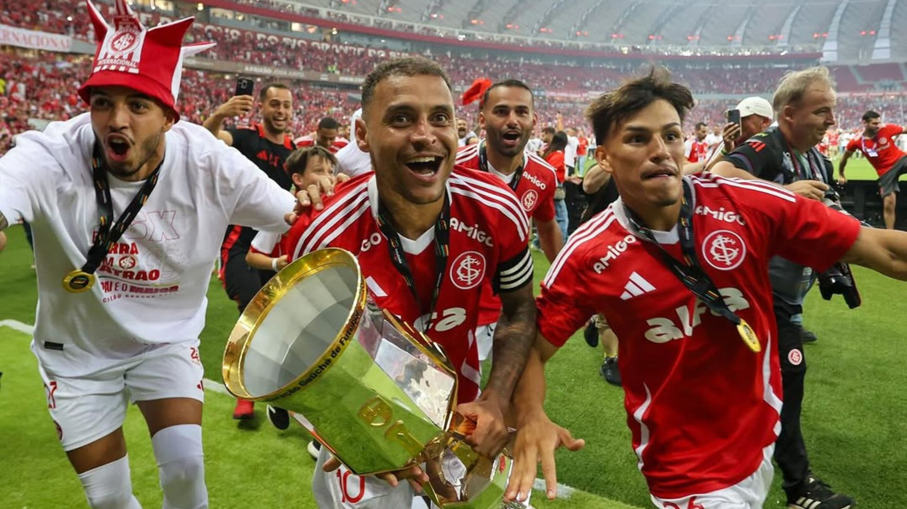

Colorado derrota o rival e vence o campeonato
O Sport Club Internacional sagrou-se campeão do Campeonato Gaúcho 2025 neste domingo, ao vencer o Grêmio por 2 a 1 no Estádio Beira-Rio, garantindo o seu 47º título estadual e reafirmando a hegemonia colorada no Rio Grande do Sul.
O estádio estava lotado, pulsando em vermelho e branco, com a torcida fazendo a diferença desde o apito inicial. Aos 15 minutos do primeiro tempo, Alan Patrick abriu o placar com um chute colocado no canto direito. Logo em seguida, Valencia ampliou após uma bela jogada coletiva.
Após o apito final, jogadores e comissão técnica comemoraram muito com a torcida, que lotou o Beira-Rio e fez uma verdadeira festa vermelha. O capitão Alan Patrick ergueu a taça sob aplausos e cânticos que ecoaram por todo o estádio.
Com o triunfo, o Internacional inicia a temporada embalado e cheio de confiança para as próximas competições, especialmente a disputa da fase final da Copa Libertadores e o Campeonato Brasileiro.